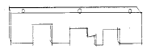
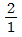
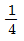
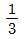
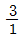
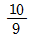
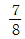
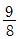
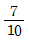

피아노조율기능사 (2004-02-01 기출문제)
1과목: 임의 구분
1. 피아노 해머의 중량은 어느 정도인가?
- 저음 10g, 최고음 6g
- 저음 17g, 최고음 10g
- 저음 8g, 최고음 4g
- 저음 12g, 최고음 10g
(정답률: 알수없음)

2. 페달은 바닥면에서 페달의 앞끝 윗면까지의 높이가 어느 정도 이어야 하는가?
- 15-25 mm
- 35-40 mm
- 45-75 mm
- 85-95 mm
(정답률: 알수없음)
3. 향봉에 관한 설명 중 옳은 것은?
- 향판의 음향 전달에는 별 영향을 못준다.
- 향봉의 재질은 나도박, 단풍나무가 좋다.
- 향판의 크라운을 보강한다.
- 향봉의 두께는 10 - 12mm 정도가 좋다.
(정답률: 알수없음)
4. 플렌지에 관한 설명 중 틀린 것은?
- 위펜에는 잭플렌지가 부착되어 있다
- 플렌지는 위펜, 받드에도 부착되어 있다
- 업라이트 댐퍼용 플렌지에는 실코드가 부착되어 있다
- 댐퍼기구에는 플렌지가 부착되어 있지 않다
(정답률: 알수없음)
5. 일반적인 피아노인 경우 튜닝핀에 대한 설명 중 틀린 것은?
- 핀판에 박히는 부분은 30∼35mm 정도의 나사산을 가공
- 머리부는 사각형으로 하고 10/100∼14/100의 테이프를 붙임
- 직경 5.75∼6.35mm
- 길이 64mm 이하
(정답률: 알수없음)
6. 다음 그림에 대한 올바른 명칭은?

- 윗판
- 소매
- 옆판
- 토대목
(정답률: 알수없음)
7. 일반적인 음향판의 3가지 구성 요소라고 할 수 있는 것은?
- 향판, 향봉, 브리지
- 향판, 아그라프, 향봉
- 향판, 지주, 프레임
- 향봉, 누름쇠, 브리지
(정답률: 알수없음)
8. 업라이트 페달의 기능과 가장 관련이 없는 것은?
- 해머의 타현거리를 줄여 소프트한 음이 나게 함
- 건반과 액션을 움직여서 타현 개수를 줄여 음량을 감소시킴
- 방음 목적으로 현과 해머사이에 펠트를 두고 타현하여 음량을 줄임
- 댐퍼를 움직여서 현에서 지음을 조절 할 수 있게 함
(정답률: 알수없음)
9. 목골(Wood frame)에 관한 설명 중 틀린 것은?
- 철골과 상관없이 17~20톤의 장력 대부분을 지탱하는 역할을 한다.
- 지주의 수가 많다고 꼭 좋은 피아노라고 할 수 없다.
- 철골을 보강하여 지주가 없는 피아노도 있다.
- 업라이트피아노에는 수직 기둥과 상하 굵은 횡목으로 짜여져 있다.
(정답률: 알수없음)
10. 조화장치(harmonic trap)에 대하여 가장 옳게 설명한 것은?
- 향판의 가장자리 쪽으로 가면서 차츰 굵게 또는 가늘게 만드는 장치
- 철골 구조상 중고음부의 힘살대 부분을 따내어 음의 전달 상태나 음향의 불균형을 향봉으로 강화하는 장치
- 향판의 울림에 큰 도움이 되지 않는 상하 모퉁이에 딱딱한 재질의 목재를 부착시켜 불필요한 진동을 없애는 장치
- 철골의 힘살대를 피하기 위하여 브릿지 상단면을 약간 도려내어 제작하는 방법
(정답률: 알수없음)
11. 두 힘이 같은 방향으로 작용한다면 그 효과는 두 힘의 합과 같고 반면에 방향이 반대로 작용한다면 그 결과는 두 힘의 차와 같게 되는 원리와 관계있는 현상은?
- 음의 간섭
- 음의 공명
- 음의 굴절
- 음의 회절
(정답률: 알수없음)
12. E32는 164.814 Hz이며 G#36은 207.652 Hz일 때 두 음 사이의 맥놀이수는?(음정비 4:5)
- 4.5
- 5.5
- 6.5
- 7.5
(정답률: 알수없음)
13. 부분음은 피아노 어느 음역에 가장 많이 포함되는가?
- 고음부
- 차고음부
- 중음부
- 저음부
(정답률: 알수없음)
14. 다음은 주파수에 관한 설명이다. 옳은 것은?
- 주파수는 현의 길이에 정비례한다.
- 주파수는 현의 지름에 정비례한다.
- 주파수는 현의 밀도의 제곱근에 정비례한다.
- 주파수는 그 장력의 제곱근에 정비례한다.
(정답률: 알수없음)
15. 소리의 파장이 4m인 경우 주파수는 몇 Hz인가? (단, 음속 340m/s)
- 13.6Hz
- 85Hz
- 440Hz
- 1360Hz
(정답률: 알수없음)
16. 음의 속도에 관한 설명 중 옳은 것은?
- 음의 속도는 섭씨 0℃에서 1초에 340m 정도 간다.
- 음의 속도는 파장이 크면 빨라진다.
- 음의 속도는 기온이 낮아지면 빨라진다.
- 음의 속도는 기체일 경우 기체밀도의 평방근에 반비례한다.
(정답률: 알수없음)
17. 파원에 대해서 상대속도를 갖는 관측자가 측정하는 파의 진동수가 파원에서 본 값과 다른 현상을 나타내는 것은?
- 반사효과
- 감쇠운동
- 도플러효과
- 회절현상
(정답률: 알수없음)
18. A37 220Hz의 파장은? (단, 음속 340m/s)
- 0.65m
- 1.25m
- 1.55m
- 1.74m
(정답률: 알수없음)
19. 음에 대한 설명 중 옳은 것은?
- 비악음(非樂音)은 소리,세기,음색,음질의 차이를 감별할 수 없으므로 음악에 사용할 수 없다.
- 순음은 강약,고저의 특성을 가지며 음색의 차이를 감별할 수 있다.
- 악음(樂音)은 규칙적인 진동에 의해 일어나고 강약, 고저,음색의 성질을 가진다.
- 소음은 시끄러운 음이나 진동수 측정이 가능하고 음악에는 사용되지 않는다.
(정답률: 알수없음)
20. 다음 설명 중 옳지 않은 것은?
- 두 악기의 소리나 높이가 같더라도 악기의 종류를 구별할 수 있다.
- 음색은 소리의 맵시이다.
- 1개의 진동수에 의한 소리는 순음이다.
- 소리굽쇠를 두드리면 고운 소리는 나지만 순음이라고 볼 수 없다.
(정답률: 알수없음)
2과목: 임의 구분
21. 다음 음정 중 불완전 협화 음정이 아닌 것은?
- 장6도
- 단3도
- 장3도
- 장2도
(정답률: 알수없음)
22. F음의 6배음은?
- 1옥타브 위의 G음
- 1옥타브 위의 A음
- 2옥타브 위의 C음
- 2옥타브 위의 Bb음
(정답률: 알수없음)
23. 평균율에 있어서 기음으로 부터 위로 완전5도 아래로 완전4도의 음정을 잡았을때 비트(beats)수는 어떠한가?
- 4도가 5도 비트의 1/2이다.
- 5도가 3비트(beats) 많다.
- 4도가 2비트(beats) 많다.
- 비트수가 1:1로 동일하다.
(정답률: 알수없음)
24. 순정음율의 이론에 대한 설명 중 틀린 것은?
- 피타고라스 음율의 결점을 보완했다.
- 장3도 화음의 불협화성을 제거했다.
- 장3도 4:5의 비율을 기초로 했다.
- 평균율과 진동수비가 동일하게 했다.
(정답률: 알수없음)
25. 평균율에 있어서 옥타브를 C1- G - C2와 같이 조율했을 때 C1- G의 맥놀이는 G - C2의 맥놀이와 어떤 관계에 있어야 하는가?




(정답률: 알수없음)
26. 조율시의 동작인 테스트 블로우(Test Blow)의 가장 정확한 뜻은?
- 음색검사
- 현의 재질검사
- 강한타현
- 터치검사
(정답률: 알수없음)
27. 음악 홀의 잔향시간에 관한 사항 중 옳은 것은?
- 잔향 시간은 440Hz 기준으로 3-4초 정도 유지 되어야 한다.
- 같은 건축 조건에서는 홀의 크기는 잔향시간과 관계가 없다.
- 잔향시간이 길어지면 음의 명확성이 뛰어나 고전음악 연주에 도움이 된다.
- 좌석 바닥을 경사지게 하는 것은 음을 밝게 느끼게 하는데 큰 역할을 한다.
(정답률: 알수없음)
28. 순정율에서 C1을 으뜸음으로 하고 그 진동수를 1로 하면 C1과 D 음간의 진동수비는?




(정답률: 알수없음)
29. 피아노 배음의 함유도에 가장 크게 영향을 끼치는 것은?
- 현의 길이
- 타현점
- 해머의 크기
- 타현거리
(정답률: 알수없음)
30. 음의 높낮이를 시간적, 미적으로 연속 배열된 것을 무엇이라 하는가?
- 하모니
- 가청역
- 화음
- 멜로디
(정답률: 알수없음)
31. 회절(diffraction) 현상이란 ?
- 음파가 장애물에 의해 반대편이 안들리는 현상
- 음파가 한 장애물의 가장 자리를 통과할 때 잘 들리는 곳과 잘 들리지 않는 곳이 생기는 경우를 말한다.
- 음파가 어떤 물체에 의해 꺾여 나감을 말한다.
- 음파가 직선 방향외에는 전달이 불가능함을 말한다.
(정답률: 알수없음)
32. 연주용 피아노 조율시 유의사항으로 옳지 않은 것은?
- 피치 변경은 적어도 연주 전날 행한다.
- 연주 직전 조정, 정음은 피한다.
- 당일 조율은 특별히 정성들여 행하고 테스트블로우는 평소보다 약하게 해야 한다.
- 연주전날 조율, 조정을 해둔다.
(정답률: 알수없음)
33. 업라이트 피아노의 잭과 받드 사이의 로스트 모션, 그랜드 피아노의 타현거리를 맞출 때 가장 적합한 공구는?
- 캡스턴 드라이버
- 백첵 레규레이터
- 잭스크류 드라이버
- 드롭스크류 드라이버
(정답률: 알수없음)
34. 다음 음정 중 안어울림 음정에 속하는 것은?
- 장6도
- 장7도
- 단6도
- 단3도
(정답률: 알수없음)
35. 림마란 무엇인가?
- 피타고라스 음계에서 장7도와 8도의 차를 말한다.
- 순정 장3도와 피타고라스 장3도의 차를 말한다.
- 80/81의 진동수비를 말한다.
- 순정 5도와 평균률 5도의 차를 말한다.
(정답률: 알수없음)
36. 위펜 힐 크로스를 교환할 때 가장 좋은 방법은?
- 크로스 중앙 부분만 접착한다.
- 크로스 전면을 접착제로 두껍게 칠하여 접착한다.
- 크로스 양단만 접착한다.
- 접착제를 묽게 해서 전면에 접착한다.
(정답률: 알수없음)
37. 피아노에 사용하는 목재의 함수율은 몇％가 좋은가?
- 1-2％
- 3-14％
- 15-30％
- 31-50％
(정답률: 알수없음)
38. 페달의 운동은 페달레버와 페달 봉을 통해 액션으로 옮겨지는데 페달부터 액션에 이르는 장치를 무엇이라 하는가?
- 트로웰
- 익스트랙터
- 호울더
- 트랩워크
(정답률: 알수없음)
39. 건반 수평고르기를 하는 가장 주된 이유는?
- 건반 무게가 달라지기 때문이다.
- 균일한 터치를 만드는데 꼭 필요하다.
- 건반이 고르지 않으면 건반이 휘어지기 때문이다.
- 건반 수평고르기를 해야 해머가 작동하기 때문이다.
(정답률: 알수없음)
40. 백건 표면으로부터 흑건 앞끝 제일 높은 곳 까지의 높이는?
- 약 8mm
- 약 12mm
- 약 16mm
- 약 18mm
(정답률: 알수없음)
3과목: 임의 구분
41. 백첵조정과 해머스톱에 대한 설명 중 옳은 것은?
- 백첵와이어를 구부릴 경우는 뿌리부분을 구부려야 한다.
- 백첵스킨과 해머우드의 마찰면은 상하가 정확한 평행보다 위쪽이 약간 좁은 듯하게 조정되어야 한다.
- 백첵와이어를 구부릴 경우는 항상 윗부분을 구부려야 한다.
- 해머스톱은 20~25mm 정도로 조정한다.
(정답률: 알수없음)
42. 해머스톱 거리에 가장 영향을 주지 않는 것은?
- 댐퍼스푼의 조정상태
- 캡스턴 와이어의 각도
- 타현거리
- 건반깊이
(정답률: 알수없음)
43. 일반적으로 업라이트 피아노의 해머 타현거리 조정은?
- 캡스턴을 돌려서 조정한다.
- 액션 브라켓 볼트를 돌려서 조정한다.
- 해머생크를 구부려서 조정한다.
- 해머레일로 조정한다.
(정답률: 알수없음)
44. 렛오프 스크류(Let off screw) 조정의 주된 목적은?
- 해머 스톱
- 해머 접근거리
- 해머 진행상태
- 해머 운동원활
(정답률: 알수없음)
45. 해머 생크가 온,습도의 불균형으로 인하여 옆으로 돌아가 다른 현을 때린다. 조정 방법은?
- 돌아간쪽 반대쪽 플렌지 밑에 종이를 고인다.
- 돌아간쪽 플렌지 밑에 종이를 고인다.
- 생크를 가열하여 바로 잡아준다.
- 현을 해머에 맞게 이동시킨다.
(정답률: 알수없음)
46. 밸런스 핀 부싱 크로스에서 마찰음(잡음)이 발생될 때 처리 방법 중 가장 적당한 방법은?
- 나무 구멍을 넓혀준다.
- 밸런스 핀을 닦아준다.
- 플라이어 등으로 부싱 구멍을 넓혀준다.
- 부싱 크로스를 연마하여 주고 흑연이나 윤활제 등을 도포한다.
(정답률: 알수없음)
47. 댐퍼에 대한 설명 중 틀린 것은?
- 댐퍼 페달을 밟아 조용히 댐퍼가 동시에 떨어져야 한다.
- 로스트 모션이 조금이라도 있어서는 안된다.
- 댐퍼와이어를 전후 좌우로 구부려 조정한다.
- 페달을 밟았을 때 댐퍼는 전체가 가지런히 떨어져야 한다.
(정답률: 알수없음)
48. 페달의 상하동작 거리가 많을 때의 처리 방법 중 가장 적합한 것은?
- 페달 나비너트(nut)를 늦추어 알맞게 조정한다.
- 크로스를 페달 밑판에 알맞는 것으로 붙인다.
- 크로스를 페달 천정에 알맞는 것으로 붙인다.
- 크로스를 토대목 페달 닿는 부분에 알맞는 것으로 붙인다.
(정답률: 알수없음)
49. 해머에 대한 설명 중 옳은 것은?
- 업라이트는 저음 해머가 짧고 그랜드는 저음 해머가 길다.
- 업라이트는 저음 해머가 길고 그랜드는 저음 해머가 짧다.
- 업라이트와 그랜드 모두 저음 해머의 길이가 같다.
- 업라이트 해머는 우드 한쪽 면에 톱날형의 요철을 만들어 마찰력을 낮춘다.
(정답률: 알수없음)
50. 위펜과 위펜 사이가 맞닿을 경우 사이를 떼어 놓는 방법은?
- 위펜 사이에 쐐기를 박는다.
- 위펜 뒷단에 알맞는 나무를 끼워 놓는다.
- 알맞는 종이 패킹을 플랜지와 레일 사이에 끼운다.
- 플랜지와 플랜지 사이를 드라이버로 비틀어 놓는다.
(정답률: 알수없음)
51. 댐퍼(Damper)에서 지음(止音)이 잘 되지 않을 때의 이유 중 틀린 것은?
- 댐퍼 펠트 접촉면의 앞뒤 중 한쪽이 떠 있을 때
- 댐퍼 레버 플랜지의 동작이 둔할 때
- 댐퍼 레버 크로스가 굳어져 있을 때
- 댐퍼 와이어의 각이 변했을 때
(정답률: 알수없음)
52. 건반 깊이가 전체적으로 깊을 때는 어떻게 조정하는 것이 좋은가?
- 후론트핀에 종이 펀칭을 고인다.
- 바란스핀에 고여있는 종이 펀칭을 빼낸다.
- 바란스레일 밑에 고여있는 종이 패킹을 빼낸다.
- 후론트 펀칭크로스를 두꺼운 것으로 교체한다.
(정답률: 알수없음)
53. 백첵 와이어와 브라이들 테이프와의 간격은 어느 정도가 가장 적당한가?
- 4.5mm
- 3.5mm
- 2.5mm
- 1.5mm
(정답률: 알수없음)
54. 건반의 상하운동에 지장을 주는 요인과 가장 관련이 없는 것은?
- 열쇠봉이 휘어져 건반에 닿는다.
- 밸런스홀이 좁아 상하운동이 원활치 못하다.
- 해머가 사진행하여 건반의 동작이 원활치 못하다.
- 후론트 홀이 좁아 상하운동이 원활치 못하다.
(정답률: 알수없음)
55. 현수리 작업시 주의할 사항과 가장 관계없는 것은?
- 부득이한 경우 현을 연결해서 사용해야 하는데 현과 동일한 굵기의 현으로만 가능하다.
- 강선을 교체할 때는 끊어진 현과 동일한 굵기의 현을 비틀림 없이 교환해야 한다.
- 현이 튜닝핀에 감기는 횟수는 약 3회 정도가 좋다.
- 장현이 끝난 후 힛치핀 위치에서 현이 후레임에 안착하도록 나무망치로 쳐 준다.
(정답률: 알수없음)
56. 액션에서 잡음이 나지 않는 경우는?
- 플랜지가 헐거웠을 때
- 잭 쿠션이 마모되었을 때
- 위펜 크로스가 마모되었을 때
- 댐퍼 펠트가 너무 부드러울 때
(정답률: 알수없음)
57. 향판에서 잡음이 날 수 없는 경우는?
- 향판과 돌림목이 떨어졌을 때
- 향판과 지주 사이가 좁아졌을 때
- 향판과 향봉 사이가 떨어졌을 때
- 향판과 후레임 사이에 이물질이 끼었을 때
(정답률: 알수없음)
58. 잭플랜지 센터핀이 너무 빡빡할 때 수리방법중 옳지 않은 것은?
- 가는 핀으로 바꾼다.
- 부싱의 습기를 제거한다.
- 센터핀 부싱을 넓혀 준다.
- 센터핀 부싱에 윤활유를 칠한다.
(정답률: 알수없음)
59. 댐퍼 수리작업에 관한 사항 중 옳은 것은?
- 댐퍼펠트가 굳어져 지음이 되지 않을 경우에는 샌드 페이퍼로 살짝 문지르고 피커로 찔러 준다.
- 댐퍼펠트를 교환할 경우는 반드시 언더펠트까지 교환해야 된다.
- 댐퍼레버 크로스를 접착할 경우에는 접착제를 전면에 칠한 후 접착한다.
- 댐퍼블럭이 떨어졌을 때는 액션을 떼어놓고 접착하는 것이 쉽다.
(정답률: 알수없음)
60. 백건반 앞면과 열쇄봉 내면 사이는 몇 mm인가?
- 0.5
- 1.5
- 3
- 5
(정답률: 알수없음)